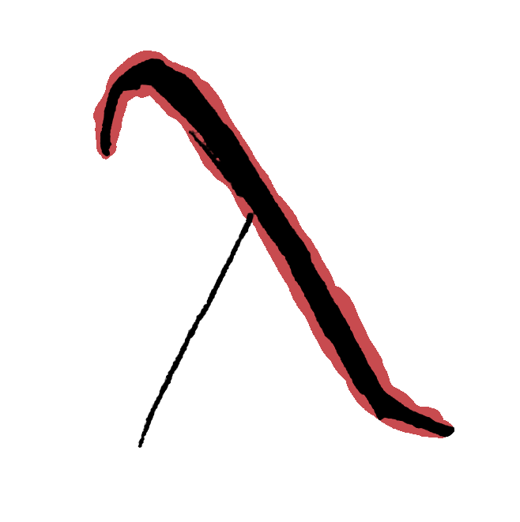
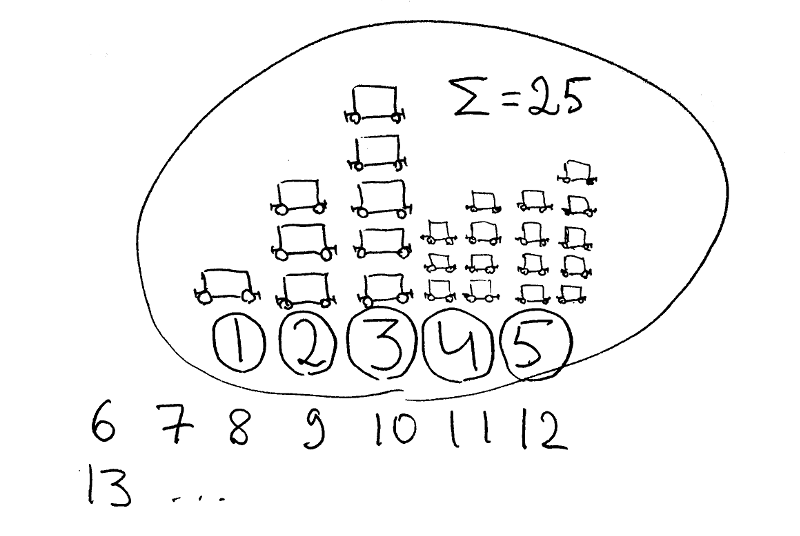
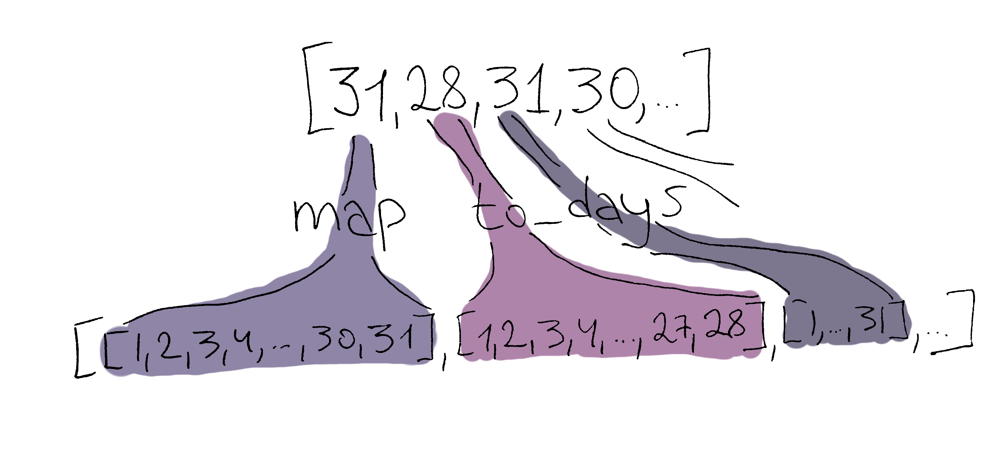

Haskell for Absolute Beginners: A Codefights Walkthrough

If you're interested in functional programming — or even slowly trying to get the hang of it — you've probably heard the same thing more than once. The big difference from the imperative style you're used to is that programs are built from the general to the particular, not the other way around. First you decide what you want, and only then how to get there.
It sounds simple. In practice, it gives your brain no peace and causes a lot of frustration the moment you try to write something useful. If that sounds familiar — or if you're just curious about Haskell and FP — keep reading. I'll show you how simple it all is. This article is in the “no time to explain, write code” style.
The idea came to me the morning after I finished the contest on codefights.com, where I had to shave off another 10 characters to get the shortest solution. Then I looked at the other entries and saw this: if I hadn't finished mine at five in the morning and hadn't forgotten to apply one hack, mine would have been the shortest. More importantly, it would have stayed simple and clear.
Wait a minute, I thought. If you explain a couple of nuances to any programmer who's written JavaScript or Python, they'll get it right away. Let me go write an article about it on Habr!
So, the problem. There's a Dude. The Dude likes to come to the railway station and count the wagons on the train that passes through every day. He likes it so much that he shows up every day. Sometimes he goes bowling and drinks White Russians. And then he can drop out of reality for a few days. When he comes back to his senses, the first thing he wants to know is how many wagons he missed. We're going to help him with that.
The number of wagons on the train isn't constant. On the first day of the month, the train is just one wagon:
Every day after that, there are two more wagons:
And so on until the start of the next month. The inputs: month ∈ [1..12],
day ∈ [1..the maximum number of days in that month], and
n ∈ [0..365] — the number of days spent bowling. Return an integer: how
many wagons the Dude will miss.
For example, month=1, day=1, n=1 gives 1. On the first day
of any month the train has one wagon, and only one day is missed — that very first
day. For month=5, day=1, n=5 the answer is 25:

For month=2, day=1, n=30 the answer is 788 (can I skip drawing that
one?). And so on.
Install Haskell, unholster your favorite editor, create an
empty file called dude.hs, and make it executable
with chmod +x dude.hs. We won't compile anything — Haskell works
perfectly well as a scripting language. Put #!/usr/bin/env runhaskell at
the very top, and we're ready to start. (Or just use this
online service.)
#!/usr/bin/env runhaskell
dude month day n = …
dude is the name of the function. Everything after it is an argument,
and after the equals sign comes the function body — which we're about to invent.
So what do we want to get? The number of missed wagons. And what is that number? The sum of the wagons over all the days the Dude didn't show up at the station. So we need a sum.
We'll find it in the
Prelude
— the standard library that every module imports by default. Look carefully and you'll
find the
sum
function. It adds up all the numbers in a list. Notice I haven't said a word about
types, monads, or whatever else they've tried to scare you with. Haskell is actually
much simpler than that, and very similar to modern JavaScript. (Which is a good moment
to recall
Lev Valkin's post about
throwing the syntactic garbage out of JavaScript and ending up with Haskell.) Anyway,
we're getting carried away:
dude month day n = sum …Good — we know how to find a sum. Now we need the list of missed wagons. To begin with, let's put a test list in place of that ridiculous ellipsis and make sure the program runs at all. Something like this:
dude month day n = sum [1, 3, 5, 7, 9]
Let's run it: ./dude.hs. Doesn't work? Is it yelling at you? Of course it
is. We need an entry point — the main function — and it also has to turn
our answer into a string and print it. Something like this will do:
main = putStrLn (show (dude 1 1 1))Whoa-whoa-whoa. So many parentheses at once, almost like Lisp. They're there because function application in Haskell is left-associative. If we'd left them out and written this:
main = putStrLn show dude 1 1 1Haskell would have decided we meant this:
main = ((putStrLn show) dude) 1 1 1
That's not what we want. In the correct main, we first call
dude with three arguments (which, for now, it happily ignores), then use
show to turn the result into a string, and only then print that string
with putStrLn.
In the wrong version, putStrLn tries to print the show
function — unsuccessfully, as you might guess. Then the result (which should be a
function, but never will be) gets dude as its only argument. Then the
result of that monstrosity (which should also be a function) gets those three
arguments. That's not how any of this works.
Hence the parentheses. There's also a wonderful operator, $, which
basically tells Haskell: “first do everything to the right of me, then put the result
in my place.” So the correct main can be rewritten like this:
main = putStrLn $ show $ dude 1 1 1It's the turnip fairy tale all over again: everyone depends on the one before them. We want to print, but first we need a string. We want a string, but first we need to call the Dude. The Dude takes three arguments and returns a sum. The sum turns into a string easily, and the string prints easily. Beautiful.
Back to the wagons. If we run ./dude.hs now, we get 25 — the
sum of the numbers in our test list. How do we build the real list?
Remember, we want the wagon counts for the days the Dude didn't come to the station.
So why not build a list of wagons for every day of the year, then pick out the days he
was away? I don't know about you, but I like that idea. We dig into the Prelude and
find the
take
function:
dude month day n = sum $ take n $ …
Okay, we've taken n days from the list. But those are the first
n days of the first month of the year, because take takes
the first n values from the start of the list. Not good. We need to skip
day days from the start of the month — actually day - 1,
since the first day of absence counts too. We'll retreat the way Napoleon did —
burning down Moscow — using
drop:
dude month day n = sum $ take n $ drop (day - 1) $ …
And then another month - 1 months from the start of the year. We'll deal
with that a little later. Since we're working with days, we can't just skip a few
months: every month has its own number of days, one that defies all logic and common
sense. So let's write down the number of days in each month somewhere on a new line.
It'll come in handy:
months = [31, 28, 31, 30, 31, 30, 31, 31, 30, 31, 30, 31]And you know what? It might turn out that the Dude starts on the 31st and finishes on the 9th. We'll have to account for that. Jumping from the end of the list (December) back to the beginning (January)? Too lazy. Better to turn the list into an infinite one and always walk forward:
months = cycle [31, 28, 31, 30, 31, 30, 31, 31, 30, 31, 30, 31]
The
cycle
function turns a finite list into an infinite one by cycling the original list. It's
implemented roughly like this:
cycle list = list ++ cycle list
Here ++ is the operator that glues two lists into one, and
list is our list — the one we want to make infinite.
How is that possible, you ask? This is infinite recursion! Memory is finite, time is finite, but the recursion and the list it produces aren't? Yes. Exactly. The thing is, Haskell is lazy (just like programmers — what a coincidence), so it won't do anything until the results are needed (procrastination?). That's why we can work with infinite lists here — and with trees, and with whatever else can be infinite (human stupidity?). But only as long as we work on a finite subset of such a list.
If we'd written this:
months = cycle [31, 28, 31, 30, 31, 30, 31, 31, 30, 31, 30, 31]
dude month day n = sum months --infinite dude
then the online runner would have killed Haskell after four seconds (try it, by the
way) because of the execution time limit. Summing the elements of an infinite list
takes infinitely long. Good thing we only take n days from our infinite
list!
Now for the most important part: turn the list of months into a list of days, then
count how many wagons there are in each one. To go from one thing (a list of months)
to another thing (a list of days), the whole universe uses
map:
months = cycle [31, 28, 31, 30, 31, 30, 31, 31, 30, 31, 30, 31]
to_days max_days = …
dude month day n = sum $ take n $ drop (day - 1) $ map to_days months
The first argument of map is a function that turns a month into a list of
days — we still have to invent it. The second argument is our infinite list. Don't
worry, map is lazy too and won't walk further than we need.
Now it's really simple:
months = cycle [31, 28, 31, 30, 31, 30, 31, 31, 30, 31, 30, 31]
to_days max_days = [1..max_days]
dude month day n = sum $ take n $ drop (day - 1) $ map to_days months
[1..max_days] is syntactic sugar for a list of all integers from 1 to
max_days. If we run the program now, it won't work again. The thing is,
to_days receives just one number from map — one element from
the list of days in a month — but returns a whole list of days in that month. So we
get a list inside a list:

We can call
concat
and flatten it into one dimension:
months = cycle [31, 28, 31, 30, 31, 30, 31, 31, 30, 31, 30, 31]
to_days max_days = [1..max_days]
dude month day n = sum $ take n $ drop (day - 1) $ concat $ map to_days months
Or we can use
concatMap
right away:
months = cycle [31, 28, 31, 30, 31, 30, 31, 31, 30, 31, 30, 31]
to_days max_days = [1..max_days]
dude month day n = sum $ take n $ drop (day - 1) $ concatMap to_days monthsAlmost there. Now let's turn the list of days into a list of wagons for that day. The problem says that on the first day of the month the train has one wagon, and every day after that it adds two. Let's write that on its own line:
number_of_wagons x = x*2 - 1
Here x is the day number in the month, of course. We map this function
over the list of days from the previous step — and don't forget to skip
month - 1 months:
#!/usr/bin/env runhaskell
months = cycle [31, 28, 31, 30, 31, 30, 31, 31, 30, 31, 30, 31]
to_days max_days = [1..max_days]
number_of_wagons x = x*2 - 1
dude month day n = sum $ take n $ drop (day - 1) $ map number_of_wagons $ concatMap to_days $ drop (month - 1) months
main = putStrLn $ show $ dude 1 1 1
Let's run it. It works. The answer is 1. Let's try other values —
3 2 4, for example. The answer is 24. Now let's check our
hypothesis about 31 December. Input: 12 31 10. Answer:
142. That's a lot! But the answer is correct.
So where's the shortest solution, you ask? Here's the thing: there's a word that starts with the letter m. And I still haven't figured out how to explain it in the same format. Besides, this has gotten long — for one article it would be overkill. Next time.